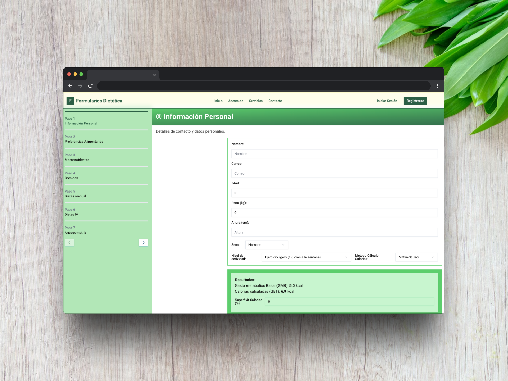
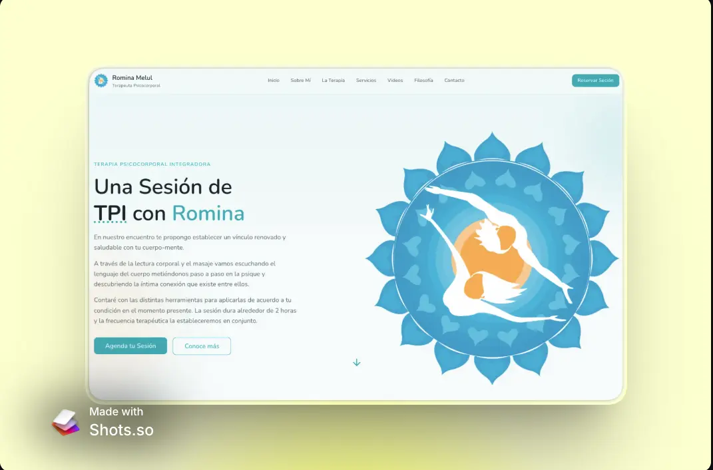

¡Hola! 👋
Soy Fitoji
Desarrollo Páginas Web Modernas
Especialista en crear experiencias digitales únicas y funcionales para convertir ideas en realidad.

Desarrollo Páginas Web Modernas
Especialista en crear experiencias digitales únicas y funcionales para convertir ideas en realidad.
Una aplicación para poder cargar cuestionarios en formato JSON hechos con IA. y poder practicar.

Sencilla página portfolio de productos garrapiñados Aneka.

Aplicación web para gestión de dietas y calorías, con formularios calculando con formular de Harris-Benedict y Mifflin-St Jeor. Desarrollo de dietas con IA o base de datos.

Sitio web profesional para terapeuta psicocorporal, con información sobre la terapia, servicios, videos y sistema de reservas.